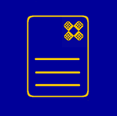
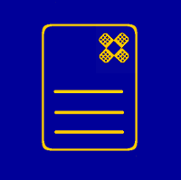
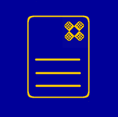
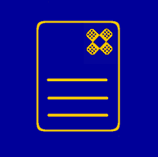

FixMyDocuments was a campaign organised by OpenForum Europe that ran from September 2014 to September 2015. Inspired by FixMyStreet, FixMyDocuments.eu aimed to help European public administrations to implement their decision to support open document formats by documenting, tracking and reporting their compliance online. This was done mainly through an online platform that allowed anyone to report URLs of web pages from public administrations on which editable documents used for sharing and collaborating were available for download or through which they could be submitted and which did not include one of the ODF family of standard formats as an option.
Over 600 organisations and individuals left a statement of support and expressed their concerns about their public administrations’ failure to use open document formats. The online platform collected over 100 reports of pages containing documents exclusively in closed/proprietary formats, and the responsible services were notified. By the end of the campaign, only around 10% of the pages had been "fixed". We also conducted a bulk analysis of all documents published by the EU institutions in 2014, by file formats (see next panel for further details).
Open Document (notice the capitalisation) is an open international standard for XML-based spreadsheets, charts, presentations and word processing documents. It is actively supported by multiple applications and it can be safely implemented in any type of software, including Free / Open Source software. This means that anyone, anywhere can open and edit ODF documents, without being required to use a piece of software from any single vendor. For more information on ODF please visit this page.